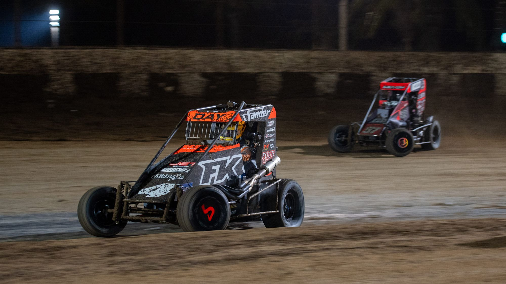

Corey Day Chases Third Straight Turkey Night Win as 85th Grand Prix Hits Ventura Saturday
Practice is Friday, Nov. 27, and the 85th ARP Turkey Night Grand Prix, the USAC National Midget season finale, runs Saturday, Nov. 28, at Ventura Raceway, paying $15,000 to win.

Corey Day will try to become the third driver to win three straight Turkey Night Grand Prix races when the 85th running of the ARP Turkey Night Grand Prix Presented by the West Coast Stock Car Hall of Fame closes the USAC NOS Energy Drink Midget National Championship season on Saturday, Nov. 28, at Ventura Raceway in Ventura, California, according to USAC’s event preview. USAC midget practice is Friday, Nov. 27, and Saturday’s 98-lap feature on the 1/5-mile dirt oval pays $15,000 to win, along with the Aggie Hat trophy. Day, of Clovis, California, won the race in 2024 and 2025 for car owner Willie Kahne. USAC said only Ron Shuman, who won four in a row from 1979 to 1982, and Billy Boat, who won from 1995 to 1997, have won three straight.
Four past winners are entered, all of them Californians: Day, Logan Seavey (2021), Justin Grant (2022) and Kyle Larson, who won in 2012, 2016, 2019 and 2023 and is going for a fifth Turkey Night win after recently claiming his third NASCAR Cup Series championship, USAC said. Only Shuman, with eight wins, has more than Larson. USAC lists 55 entries in its Nov. 26 preview, 28 of them Turkey Night rookies, among them IndyCar winner Christian Rasmussen, late model star Ricky Thornton Jr. and Plaza Park winner Jett Yantis. The race is also the last event for Keith Kunz Motorsports, the seven-time Turkey Night-winning team, before it closes after more than four decades in USAC midget racing. Kunz brings five cars for Jacob Denney, Cannon McIntosh, Gavin Miller, Colton Robinson and Drake Cardey.
Denney clinched the 2026 USAC National Midget title with his runner-up finish Tuesday at Bakersfield, which also gave Kunz its record 14th USAC National Midget entrant title, and USAC said he can race Saturday without worrying about points. He leads with 1,316 points, ahead of Kevin Thomas Jr. (1,233) and Grant (1,204). Denney’s best Turkey Night finish is fourth in 2024, when he started on the pole and led a race-high 57 laps, and he was fifth in both 2023 and 2025, USAC said. Chad Boat’s CB Industries team, which won two of the first three Golden State Invasion races with Buddy Kofoid at Merced and Daison Pursley at Bakersfield, enters Grant, Pursley, Jade Avedisian and rookie Jett Barnes as Boat seeks his first Turkey Night win as a car owner.
Both nights also feature the Ultimate Sprint Car Series. According to USAC’s event information, pits open at 11 a.m. Pacific (1 p.m. CT) on Friday and Saturday, grandstands open at 3 p.m. Pacific (5 p.m. CT) and cars are on track at 3:30 p.m. Pacific (5:30 p.m. CT). Saturday’s program includes midget qualifying, qualifying races, a last chance qualifier and the 98-lap feature, which starts 26 cars and does not count yellow-flag laps. Both nights stream on FloRacing. Jerry Coons Jr. and historian Harold Osmer are the co-grand marshals. For the rest of the week’s schedule, see our weekly preview.